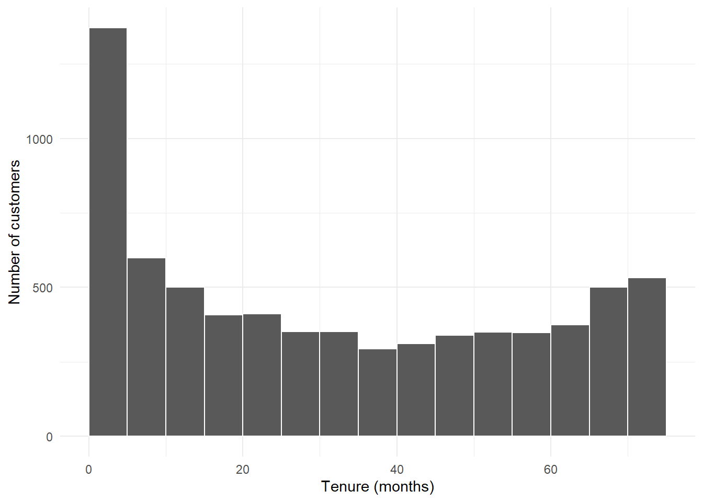
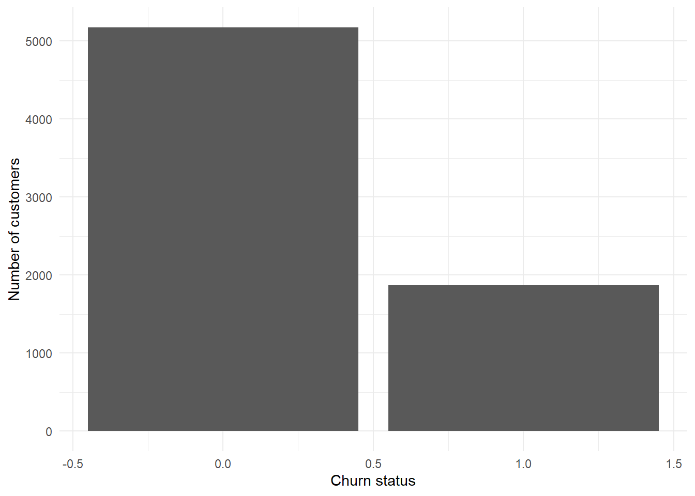

# if (!require(pacman)) { install.packages("pacman") }
pacman::p_load(tidyverse, bulkreadr, janitor, readxl, writexl)Assignment
1) Data Import & Initial Exploration
The Dataset: telco-customer-churn.csv was used for this assignment. It requires the loading of the dataset and initial exploration of the data. The dataset contains information about customers of a telecommunications company, including their demographics, services subscribed to, and whether they have churned (i.e., stopped using the service).
call library
importing dataset and labelled as telco_data
telco_data <- read_csv("data/telco-customer-churn.csv")Rows: 7043 Columns: 21
── Column specification ────────────────────────────────────────────────────────
Delimiter: ","
chr (17): customerID, gender, Partner, Dependents, PhoneService, MultipleLin...
dbl (4): SeniorCitizen, tenure, MonthlyCharges, TotalCharges
ℹ Use `spec()` to retrieve the full column specification for this data.
ℹ Specify the column types or set `show_col_types = FALSE` to quiet this message.Exploring the dataset
head(telco_data)# A tibble: 6 × 21
customerID gender SeniorCitizen Partner Dependents tenure PhoneService
<chr> <chr> <dbl> <chr> <chr> <dbl> <chr>
1 7590-VHVEG Female 0 Yes No 1 No
2 5575-GNVDE Male 0 No No 34 Yes
3 3668-QPYBK Male 0 No No 2 Yes
4 7795-CFOCW Male 0 No No 45 No
5 9237-HQITU Female 0 No No 2 Yes
6 9305-CDSKC Female 0 No No 8 Yes
# ℹ 14 more variables: MultipleLines <chr>, InternetService <chr>,
# OnlineSecurity <chr>, OnlineBackup <chr>, DeviceProtection <chr>,
# TechSupport <chr>, StreamingTV <chr>, StreamingMovies <chr>,
# Contract <chr>, PaperlessBilling <chr>, PaymentMethod <chr>,
# MonthlyCharges <dbl>, TotalCharges <dbl>, Churn <chr>glimpse(telco_data) Rows: 7,043
Columns: 21
$ customerID <chr> "7590-VHVEG", "5575-GNVDE", "3668-QPYBK", "7795-CFOCW…
$ gender <chr> "Female", "Male", "Male", "Male", "Female", "Female",…
$ SeniorCitizen <dbl> 0, 0, 0, 0, 0, 0, 0, 0, 0, 0, 0, 0, 0, 0, 0, 0, 0, 0,…
$ Partner <chr> "Yes", "No", "No", "No", "No", "No", "No", "No", "Yes…
$ Dependents <chr> "No", "No", "No", "No", "No", "No", "Yes", "No", "No"…
$ tenure <dbl> 1, 34, 2, 45, 2, 8, 22, 10, 28, 62, 13, 16, 58, 49, 2…
$ PhoneService <chr> "No", "Yes", "Yes", "No", "Yes", "Yes", "Yes", "No", …
$ MultipleLines <chr> "No phone service", "No", "No", "No phone service", "…
$ InternetService <chr> "DSL", "DSL", "DSL", "DSL", "Fiber optic", "Fiber opt…
$ OnlineSecurity <chr> "No", "Yes", "Yes", "Yes", "No", "No", "No", "Yes", "…
$ OnlineBackup <chr> "Yes", "No", "Yes", "No", "No", "No", "Yes", "No", "N…
$ DeviceProtection <chr> "No", "Yes", "No", "Yes", "No", "Yes", "No", "No", "Y…
$ TechSupport <chr> "No", "No", "No", "Yes", "No", "No", "No", "No", "Yes…
$ StreamingTV <chr> "No", "No", "No", "No", "No", "Yes", "Yes", "No", "Ye…
$ StreamingMovies <chr> "No", "No", "No", "No", "No", "Yes", "No", "No", "Yes…
$ Contract <chr> "Month-to-month", "One year", "Month-to-month", "One …
$ PaperlessBilling <chr> "Yes", "No", "Yes", "No", "Yes", "Yes", "Yes", "No", …
$ PaymentMethod <chr> "Electronic check", "Mailed check", "Mailed check", "…
$ MonthlyCharges <dbl> 29.85, 56.95, 53.85, 42.30, 70.70, 99.65, 89.10, 29.7…
$ TotalCharges <dbl> 29.85, 1889.50, 108.15, 1840.75, 151.65, 820.50, 1949…
$ Churn <chr> "No", "No", "Yes", "No", "Yes", "Yes", "No", "No", "Y…summary(telco_data) customerID gender SeniorCitizen Partner
Length :7043 Length :7043 Min. :0.0000 Length :7043
N.unique :7043 N.unique : 2 1st Qu.:0.0000 N.unique : 2
N.blank : 0 N.blank : 0 Median :0.0000 N.blank : 0
Min.nchar: 10 Min.nchar: 4 Mean :0.1621 Min.nchar: 2
Max.nchar: 10 Max.nchar: 6 3rd Qu.:0.0000 Max.nchar: 3
Max. :1.0000
Dependents tenure PhoneService MultipleLines
Length :7043 Min. : 0.00 Length :7043 Length :7043
N.unique : 2 1st Qu.: 9.00 N.unique : 2 N.unique : 3
N.blank : 0 Median :29.00 N.blank : 0 N.blank : 0
Min.nchar: 2 Mean :32.37 Min.nchar: 2 Min.nchar: 2
Max.nchar: 3 3rd Qu.:55.00 Max.nchar: 3 Max.nchar: 16
Max. :72.00
InternetService OnlineSecurity OnlineBackup DeviceProtection
Length :7043 Length :7043 Length :7043 Length :7043
N.unique : 3 N.unique : 3 N.unique : 3 N.unique : 3
N.blank : 0 N.blank : 0 N.blank : 0 N.blank : 0
Min.nchar: 2 Min.nchar: 2 Min.nchar: 2 Min.nchar: 2
Max.nchar: 11 Max.nchar: 19 Max.nchar: 19 Max.nchar: 19
TechSupport StreamingTV StreamingMovies Contract
Length :7043 Length :7043 Length :7043 Length :7043
N.unique : 3 N.unique : 3 N.unique : 3 N.unique : 3
N.blank : 0 N.blank : 0 N.blank : 0 N.blank : 0
Min.nchar: 2 Min.nchar: 2 Min.nchar: 2 Min.nchar: 8
Max.nchar: 19 Max.nchar: 19 Max.nchar: 19 Max.nchar: 14
PaperlessBilling PaymentMethod MonthlyCharges TotalCharges
Length :7043 Length :7043 Min. : 18.25 Min. : 18.8
N.unique : 2 N.unique : 4 1st Qu.: 35.50 1st Qu.: 401.4
N.blank : 0 N.blank : 0 Median : 70.35 Median :1397.5
Min.nchar: 2 Min.nchar: 12 Mean : 64.76 Mean :2283.3
Max.nchar: 3 Max.nchar: 25 3rd Qu.: 89.85 3rd Qu.:3794.7
Max. :118.75 Max. :8684.8
NAs :11
Churn
Length :7043
N.unique : 2
N.blank : 0
Min.nchar: 2
Max.nchar: 3
inspect_na(telco_data)# A tibble: 21 × 3
col_name cnt pcnt
<chr> <int> <dbl>
1 TotalCharges 11 0.156
2 customerID 0 0
3 gender 0 0
4 SeniorCitizen 0 0
5 Partner 0 0
6 Dependents 0 0
7 tenure 0 0
8 PhoneService 0 0
9 MultipleLines 0 0
10 InternetService 0 0
# ℹ 11 more rows2) Data Transformation
Recode the churn column into a binary variable where “Yes” = 1, and “No” = 0
Recode the SeniorCitizen variable into a more descriptive format (e.g. “Yes” → “Senior”, “No” → “non-Senior”)
Create a new column ServiceCount that sums the indicators (1/0) for multiple services (e.g. PhoneService, OnlineSecurity, etc.)
these are the multiple services; PhoneService, MultipleLines, OnlineSecurity, OnlineBackup, DeviceProtection, TechSupport, StreamingTV, StreamingMovies
recode churn (“Yes” = 1, and “No” = 0) & recode SeniorCitizen (1 = “Senior”, 0 = “non-senior”)
# telco_data |> mutate(Churn= if_else(Churn=="Yes", 1, 0))
# telco_data |> mutate(SeniorCitizen = if_else(SeniorCitizen == 1, "Senior", "non-senior")) |> View()telco_data_1 <- telco_data |>
mutate(
Churn = if_else(Churn == "Yes", 1, 0),
SeniorCitizen = if_else(SeniorCitizen == 1, "Senior", "non-senior")
)
names(telco_data_1) [1] "customerID" "gender" "SeniorCitizen" "Partner"
[5] "Dependents" "tenure" "PhoneService" "MultipleLines"
[9] "InternetService" "OnlineSecurity" "OnlineBackup" "DeviceProtection"
[13] "TechSupport" "StreamingTV" "StreamingMovies" "Contract"
[17] "PaperlessBilling" "PaymentMethod" "MonthlyCharges" "TotalCharges"
[21] "Churn" converting Yes/No to 1/0 for the multiple services
telco_data_2 <- telco_data_1 |>
mutate(
PhoneService = if_else(PhoneService=="Yes", 1, 0),
OnlineSecurity = if_else(OnlineSecurity=="Yes", 1, 0),
OnlineBackup = if_else(OnlineBackup == "Yes", 1, 0),
DeviceProtection = if_else(DeviceProtection== "Yes", 1, 0),
TechSupport = if_else(TechSupport== "Yes", 1, 0),
StreamingTV = if_else(StreamingTV== "Yes", 1, 0),
StreamingMovies = if_else(StreamingMovies== "Yes", 1, 0)
)create a new column ServiceCount
telco_data_clean <- telco_data_2 |>
mutate(ServiceCount = PhoneService + OnlineSecurity + OnlineBackup + DeviceProtection + TechSupport + StreamingTV + StreamingMovies)
glimpse(telco_data_clean)Rows: 7,043
Columns: 22
$ customerID <chr> "7590-VHVEG", "5575-GNVDE", "3668-QPYBK", "7795-CFOCW…
$ gender <chr> "Female", "Male", "Male", "Male", "Female", "Female",…
$ SeniorCitizen <chr> "non-senior", "non-senior", "non-senior", "non-senior…
$ Partner <chr> "Yes", "No", "No", "No", "No", "No", "No", "No", "Yes…
$ Dependents <chr> "No", "No", "No", "No", "No", "No", "Yes", "No", "No"…
$ tenure <dbl> 1, 34, 2, 45, 2, 8, 22, 10, 28, 62, 13, 16, 58, 49, 2…
$ PhoneService <dbl> 0, 1, 1, 0, 1, 1, 1, 0, 1, 1, 1, 1, 1, 1, 1, 1, 1, 1,…
$ MultipleLines <chr> "No phone service", "No", "No", "No phone service", "…
$ InternetService <chr> "DSL", "DSL", "DSL", "DSL", "Fiber optic", "Fiber opt…
$ OnlineSecurity <dbl> 0, 1, 1, 1, 0, 0, 0, 1, 0, 1, 1, 0, 0, 0, 1, 1, 0, 1,…
$ OnlineBackup <dbl> 1, 0, 1, 0, 0, 0, 1, 0, 0, 1, 0, 0, 0, 1, 0, 1, 0, 0,…
$ DeviceProtection <dbl> 0, 1, 0, 1, 0, 1, 0, 0, 1, 0, 0, 0, 1, 1, 1, 1, 0, 1,…
$ TechSupport <dbl> 0, 0, 0, 1, 0, 0, 0, 0, 1, 0, 0, 0, 0, 0, 1, 1, 0, 0,…
$ StreamingTV <dbl> 0, 0, 0, 0, 0, 1, 1, 0, 1, 0, 0, 0, 1, 1, 1, 1, 0, 1,…
$ StreamingMovies <dbl> 0, 0, 0, 0, 0, 1, 0, 0, 1, 0, 0, 0, 1, 1, 1, 1, 0, 1,…
$ Contract <chr> "Month-to-month", "One year", "Month-to-month", "One …
$ PaperlessBilling <chr> "Yes", "No", "Yes", "No", "Yes", "Yes", "Yes", "No", …
$ PaymentMethod <chr> "Electronic check", "Mailed check", "Mailed check", "…
$ MonthlyCharges <dbl> 29.85, 56.95, 53.85, 42.30, 70.70, 99.65, 89.10, 29.7…
$ TotalCharges <dbl> 29.85, 1889.50, 108.15, 1840.75, 151.65, 820.50, 1949…
$ Churn <dbl> 0, 0, 1, 0, 1, 1, 0, 0, 1, 0, 0, 0, 0, 1, 0, 0, 0, 0,…
$ ServiceCount <dbl> 1, 3, 3, 3, 1, 4, 3, 1, 5, 3, 2, 1, 4, 5, 6, 7, 1, 5,…summary(telco_data_clean) customerID gender SeniorCitizen Partner
Length :7043 Length :7043 Length :7043 Length :7043
N.unique :7043 N.unique : 2 N.unique : 2 N.unique : 2
N.blank : 0 N.blank : 0 N.blank : 0 N.blank : 0
Min.nchar: 10 Min.nchar: 4 Min.nchar: 6 Min.nchar: 2
Max.nchar: 10 Max.nchar: 6 Max.nchar: 10 Max.nchar: 3
Dependents tenure PhoneService MultipleLines
Length :7043 Min. : 0.00 Min. :0.0000 Length :7043
N.unique : 2 1st Qu.: 9.00 1st Qu.:1.0000 N.unique : 3
N.blank : 0 Median :29.00 Median :1.0000 N.blank : 0
Min.nchar: 2 Mean :32.37 Mean :0.9032 Min.nchar: 2
Max.nchar: 3 3rd Qu.:55.00 3rd Qu.:1.0000 Max.nchar: 16
Max. :72.00 Max. :1.0000
InternetService OnlineSecurity OnlineBackup DeviceProtection
Length :7043 Min. :0.0000 Min. :0.0000 Min. :0.0000
N.unique : 3 1st Qu.:0.0000 1st Qu.:0.0000 1st Qu.:0.0000
N.blank : 0 Median :0.0000 Median :0.0000 Median :0.0000
Min.nchar: 2 Mean :0.2867 Mean :0.3449 Mean :0.3439
Max.nchar: 11 3rd Qu.:1.0000 3rd Qu.:1.0000 3rd Qu.:1.0000
Max. :1.0000 Max. :1.0000 Max. :1.0000
TechSupport StreamingTV StreamingMovies Contract
Min. :0.0000 Min. :0.0000 Min. :0.0000 Length :7043
1st Qu.:0.0000 1st Qu.:0.0000 1st Qu.:0.0000 N.unique : 3
Median :0.0000 Median :0.0000 Median :0.0000 N.blank : 0
Mean :0.2902 Mean :0.3844 Mean :0.3879 Min.nchar: 8
3rd Qu.:1.0000 3rd Qu.:1.0000 3rd Qu.:1.0000 Max.nchar: 14
Max. :1.0000 Max. :1.0000 Max. :1.0000
PaperlessBilling PaymentMethod MonthlyCharges TotalCharges
Length :7043 Length :7043 Min. : 18.25 Min. : 18.8
N.unique : 2 N.unique : 4 1st Qu.: 35.50 1st Qu.: 401.4
N.blank : 0 N.blank : 0 Median : 70.35 Median :1397.5
Min.nchar: 2 Min.nchar: 12 Mean : 64.76 Mean :2283.3
Max.nchar: 3 Max.nchar: 25 3rd Qu.: 89.85 3rd Qu.:3794.7
Max. :118.75 Max. :8684.8
NAs :11
Churn ServiceCount
Min. :0.0000 Min. :0.000
1st Qu.:0.0000 1st Qu.:1.000
Median :0.0000 Median :3.000
Mean :0.2654 Mean :2.941
3rd Qu.:1.0000 3rd Qu.:4.000
Max. :1.0000 Max. :7.000
GBG Version
telco_data_2. <-
telco_data_1 |>
mutate(
ServiceCount =
(PhoneService == "Yes") +
(OnlineSecurity == "Yes") +
(OnlineBackup == "Yes") +
(DeviceProtection == "Yes") +
(TechSupport == "Yes") +
(StreamingTV == "Yes") +
(StreamingMovies == "Yes"
)
)
telco_data_2.# A tibble: 7,043 × 22
customerID gender SeniorCitizen Partner Dependents tenure PhoneService
<chr> <chr> <chr> <chr> <chr> <dbl> <chr>
1 7590-VHVEG Female non-senior Yes No 1 No
2 5575-GNVDE Male non-senior No No 34 Yes
3 3668-QPYBK Male non-senior No No 2 Yes
4 7795-CFOCW Male non-senior No No 45 No
5 9237-HQITU Female non-senior No No 2 Yes
6 9305-CDSKC Female non-senior No No 8 Yes
7 1452-KIOVK Male non-senior No Yes 22 Yes
8 6713-OKOMC Female non-senior No No 10 No
9 7892-POOKP Female non-senior Yes No 28 Yes
10 6388-TABGU Male non-senior No Yes 62 Yes
# ℹ 7,033 more rows
# ℹ 15 more variables: MultipleLines <chr>, InternetService <chr>,
# OnlineSecurity <chr>, OnlineBackup <chr>, DeviceProtection <chr>,
# TechSupport <chr>, StreamingTV <chr>, StreamingMovies <chr>,
# Contract <chr>, PaperlessBilling <chr>, PaymentMethod <chr>,
# MonthlyCharges <dbl>, TotalCharges <dbl>, Churn <dbl>, ServiceCount <int>3) Grouping & Summarisation
Use group_by() and summarise() to calculate the churn rate for key segments (e.g. by Contract, InternetService)
churn rate by contract
telco_by_contract <- telco_data_clean |>
group_by(Contract) |>
summarise(
churn = sum(Churn, na.rm = TRUE),
churn_rate = mean(Churn) * 100
)
telco_by_contract# A tibble: 3 × 3
Contract churn churn_rate
<chr> <dbl> <dbl>
1 Month-to-month 1655 42.7
2 One year 166 11.3
3 Two year 48 2.83churn rate by Internet Service
telco_by_inter <- telco_data_clean |>
group_by(InternetService) |>
summarise(
churn = sum(Churn),
churn_rate = mean(Churn) * 100
)churn rate by both contract and Internet Service
telco_by_contract_internet <- telco_data_clean |> group_by(Contract, InternetService) |>
summarise(churn = sum(Churn, na.rm = TRUE),
churn_rate = mean(Churn)*100)`summarise()` has regrouped the output.
ℹ Summaries were computed grouped by Contract and InternetService.
ℹ Output is grouped by Contract.
ℹ Use `summarise(.groups = "drop_last")` to silence this message.
ℹ Use `summarise(.by = c(Contract, InternetService))` for per-operation
grouping (`?dplyr::dplyr_by`) instead.telco_by_contract_internet# A tibble: 9 × 4
# Groups: Contract [3]
Contract InternetService churn churn_rate
<chr> <chr> <dbl> <dbl>
1 Month-to-month DSL 394 32.2
2 Month-to-month Fiber optic 1162 54.6
3 Month-to-month No 99 18.9
4 One year DSL 53 9.30
5 One year Fiber optic 104 19.3
6 One year No 9 2.47
7 Two year DSL 12 1.91
8 Two year Fiber optic 31 7.23
9 Two year No 5 0.784Calculate the overall churn rate
overall_churn <- telco_data_clean |>
summarise(total_churn = sum(Churn),
churn_rate = mean(Churn)*100)
overall_churn# A tibble: 1 × 2
total_churn churn_rate
<dbl> <dbl>
1 1869 26.5churn rate for each Contract type
contract_churn <- telco_data_clean |>
group_by(Contract) |>
summarise(count = n(),
churn = sum(Churn),
churn_rate = mean(Churn)*100)
contract_churn# A tibble: 3 × 4
Contract count churn churn_rate
<chr> <int> <dbl> <dbl>
1 Month-to-month 3875 1655 42.7
2 One year 1473 166 11.3
3 Two year 1695 48 2.83Summary statistics for internetservices (count, Average monthly charges, Average tenure)
summary_internet <- telco_data_clean |> group_by(InternetService) |>
summarise( ave_monthly_charges = mean(MonthlyCharges,
na.rm = TRUE),
ave_tenure = mean(tenure, na.rm = TRUE))
summary_internet# A tibble: 3 × 3
InternetService ave_monthly_charges ave_tenure
<chr> <dbl> <dbl>
1 DSL 58.1 32.8
2 Fiber optic 91.5 32.9
3 No 21.1 30.5Use across() to summarise monthly charges for both genders in one concise step
# by use of summarise(.by)
gender_summary <- telco_data_clean |>
summarise(
across(
MonthlyCharges,
list(
Mean = ~ mean(.x, na.rm = TRUE),
Median = ~ median(.x, na.rm = TRUE),
Minimum = ~ min(.x, na.rm = TRUE),
Maximum = ~ max(.x, na.rm = TRUE)
)
),
.by = gender
)
gender_summary# A tibble: 2 × 5
gender MonthlyCharges_Mean MonthlyCharges_Median MonthlyCharges_Minimum
<chr> <dbl> <dbl> <dbl>
1 Female 65.2 70.6 18.4
2 Male 64.3 70.1 18.2
# ℹ 1 more variable: MonthlyCharges_Maximum <dbl># by use of group_by() and summarise() combo
telco_data_clean |>
group_by(gender) |>
summarise(
mean_charges = mean(MonthlyCharges, na.rm = TRUE),
median_charges = median(MonthlyCharges, na.rm = TRUE),
min_charges = min(MonthlyCharges, na.rm = TRUE),
max_charges = max(MonthlyCharges, na.rm = TRUE)
)# A tibble: 2 × 5
gender mean_charges median_charges min_charges max_charges
<chr> <dbl> <dbl> <dbl> <dbl>
1 Female 65.2 70.6 18.4 119.
2 Male 64.3 70.1 18.2 118.telco_data_clean# A tibble: 7,043 × 22
customerID gender SeniorCitizen Partner Dependents tenure PhoneService
<chr> <chr> <chr> <chr> <chr> <dbl> <dbl>
1 7590-VHVEG Female non-senior Yes No 1 0
2 5575-GNVDE Male non-senior No No 34 1
3 3668-QPYBK Male non-senior No No 2 1
4 7795-CFOCW Male non-senior No No 45 0
5 9237-HQITU Female non-senior No No 2 1
6 9305-CDSKC Female non-senior No No 8 1
7 1452-KIOVK Male non-senior No Yes 22 1
8 6713-OKOMC Female non-senior No No 10 0
9 7892-POOKP Female non-senior Yes No 28 1
10 6388-TABGU Male non-senior No Yes 62 1
# ℹ 7,033 more rows
# ℹ 15 more variables: MultipleLines <chr>, InternetService <chr>,
# OnlineSecurity <dbl>, OnlineBackup <dbl>, DeviceProtection <dbl>,
# TechSupport <dbl>, StreamingTV <dbl>, StreamingMovies <dbl>,
# Contract <chr>, PaperlessBilling <chr>, PaymentMethod <chr>,
# MonthlyCharges <dbl>, TotalCharges <dbl>, Churn <dbl>, ServiceCount <dbl>4. Data Visualization
Exploratory visualizations
Distribution of customer tenure
# tenure-histogram
ggplot(telco_data_clean, aes(x = tenure)) +
geom_histogram(binwidth = 5, boundary = 0, color = "white") +
labs(x = "Tenure (months)", y = "Number of customers") +
theme_minimal()
The histogram reveals how customers are distributed across the customer lifecycle and helps identify concentrations of very new and long-standing customers.
Churned versus non-churned customers
# churn-bar
ggplot(telco_data_clean, aes(x = Churn, fill = Churn)) +
geom_bar(show.legend = FALSE) +
labs(x = "Churn status", y = "Number of customers") +
theme_minimal()Warning: The following aesthetics were dropped during statistical transformation: fill.
ℹ This can happen when ggplot fails to infer the correct grouping structure in
the data.
ℹ Did you forget to specify a `group` aesthetic or to convert a numerical
variable into a factor?
The bar chart makes the class balance visible and provides context for interpreting the overall churn rate.
Discussion Points
Data transformation with dplyr converts raw records into analysis-ready variables and summaries. In this report, mutate() creates the binary churn indicator, descriptive senior-citizen label, average charge metric, and service count. group_by() and summarise() produce churn rates and segment-level statistics, while across() applies the same statistical functions efficiently to multiple variables. The result is shorter, more readable, reproducible code and a dataset that can move naturally from exploratory analysis into predictive modelling.